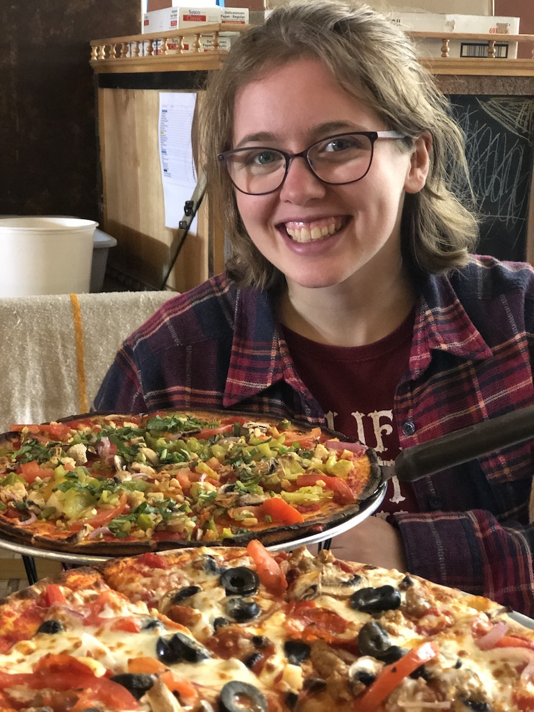

My Portfolio

Rogue Pickings Website
HTML & CSS from Photoshop Design Comp

Jubilee Austen Projext
HTML & CSS Website Concept

Hoofbeats in the West
HTML & CSS Website Concept
About Me
Hey friend!
Growing up with a techie dad and a mom who believes in always finding a creative solution to life’s challenges, web development was just the natural right step for me. After following the self-taught route for several years I enrolled in Skillcrush’s Break Into Tech Blueprint. In addition to coding I love traveling (western roadtrips are my jam), horseback riding, and throwing a good kettlebell swing.
Let's work together, what's on your mind?
